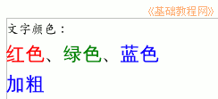

，它的图标是一个磁盘，保存一下文件；
，它的图标是一个磁盘，保存一下文件；OpenOffice.org 教程之 Writer 文字处理
作者：TeliuTe 来源：基础教程网
二、颜色效果 返回目录 下一课使用颜色可以美化文字，同时也可以更好地标识重点内容，下面我们通过一个练习来学习；
1、文字颜色
1）启动 Writer，自动新建一个空白文档；
2）在页面中输入两行内容：“文字颜色：↙红色、绿色、蓝色”（↙表示每行输完后按一下回车键），
拖黑选中第二行，把字体设为“文泉驿正黑”、字号改成“三号”；
3）选中文字“红色”在工具栏右边找到一个彩色按钮，这是给文字选颜色的；
点击它旁边的下拉按钮，出来颜色面板，在第二行中选择“红色”，将文字设为红色(这儿是选中反白显示)；
4）同样再选中文字“绿色”，在工具栏的颜色按钮中，选择绿色；将文字“蓝色”的颜色改成蓝色；
以“文字颜色”为文件名，保存文件到自己的文件夹；
2、文字效果
1）在第二行文字后面空白处点一下，取消文字的选中状态，光标插入点在最后面闪烁，按一下回车键到第三行；
2）输入文字“加粗”，你会发现出来的是蓝色的文字，原因是文字格式会自动向后延续；

3）选中文字“加粗”，在工具栏上的颜色按钮上点一下，选择第一行的“自动”，文字的颜色就去掉了；
4）接着输入“、倾斜、下划线”，接下来我们用工具栏的按钮来添加这三种效果；
5）选中文字“加粗”，在工具栏中间上点第一个粗的“A”，文字就加粗了，选中“倾斜”，点一下工具栏上斜着的“A”，文字就倾斜了，选中“下划线”，点一下第三个“A”，文字下面就出来了一条下划线；
点击工具栏左边的“保存”按钮，它的图标是一个磁盘，保存一下文件；
3、“字符”菜单
1）文字的各种格式设置，还可以在“格式”菜单中同时进行，点击菜单“格式－字符(H)..”，弹出一个面板；
2）面板上面有几个标签，可以设置中英文字体、字符颜色、效果等，最后单击“确定”就可以设置文字格式；
本节学习了文字和颜色效果的基本操作，如果你成功地完成了练习，请继续学习下一课内容；本教程由86团学校TeliuTe制作|著作权所有
基础教程网：http://teliute.org
美丽的校园……
转载和引用本站内容，请保留版权信息和本站链接。